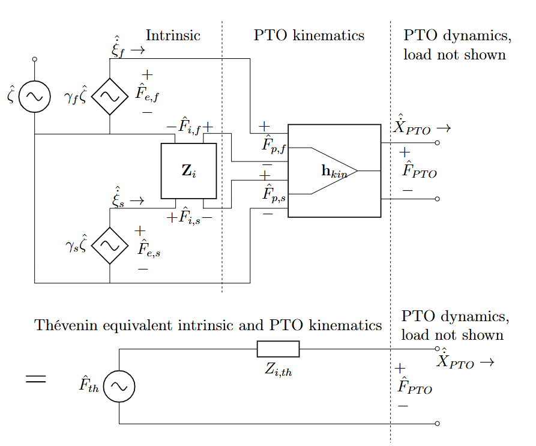
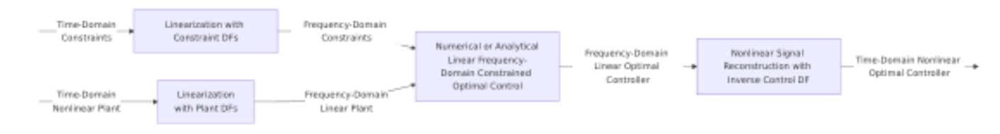
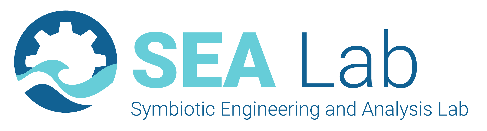

Rebecca McCabe - PhD Dissertation Defense
PI: Maha Haji, Symbiotic Engineering and Analysis Lab
Committee: Patrick Reed, Jacob Mays, Ryan Coe
2026-05-21
const logs = await FileAttachment(“weekend-logs.json”).json();
Motivation
Modeling
Theory and Implementation
Validation and Benchmarking
Design Optimization: Cost
Systems Formulation
Results
Design Optimization: Economic and Environmental Value
Metrics and Formulation
Preliminary Results
Conclusion
Motivation
Modeling
Theory and Implementation
Validation and Benchmarking
Design Optimization: Cost
Systems Formulation
Results
Design Optimization: Economic and Environmental Value
Metrics and Formulation
Preliminary Results
Conclusion
PRIMRE - National Renewable Energy Laboratory
Relevance to the grid:
Seasonal profile
Predictability and daily profile
Resource diversity
Relevance for off-grid projects:
Offshore co-location
Smaller scale
Other resources not viable
U.S. Department of Energy
Goal: use early-stage design optimization to inform which WEC design is most viable
Low funding
Few ocean deployments
High device costs
Optimization
Value metrics
Alternative markets
High device costs
Value metrics
Optimization
Adapted from Caio et al. 2019
We want a simulation and optimization framework that is:
interdisciplinary
fast
accurate
reproducible
informative
Motivation
Modeling
Theory and Implementation
Validation and Benchmarking
Design Optimization: Cost
Systems Formulation
Results
Design Optimization: Economic and Environmental Value
Metrics and Formulation
Preliminary Results
Conclusion
Algebraic
Linear PDE
Nonlinear ODE
Linear PDE
Algebraic
Chosen methods
Semi-analytical: dynamics, hydrodynamics
Analytical: structures
Steps for each model
Development
Synthesis
Validation
Benchmarking
Accuracy
Compute time
Algebraic/Lumped
Numerical Linear
Numerical Nonlinear
(Semi-) Analytical
Open-source Python toolbox: OpenFLASH
Geometry Mathematical development Open-source implementation ——————– —————————— ——————————- Simple cylinder Yeung 1980 McCabe, Khanal, and Haji 2024 N-cylinder Kokkinowrachos 1986 Best et. al 2025 (in review) Slanted N-cylinder McCabe et. al 2026 (in prep) McCabe et. al 2026 (in prep)
McCabe, Murphy, and Haji, 2022.
Powertrain kinematics and dynamics
Underactuated (fewer actuators than degrees of freedom)

image
Incorporate time-domain constraints with collocation
Apply describing function linearization

image
McCabe, Murphy, and Haji, 2022.
… (file continues)
